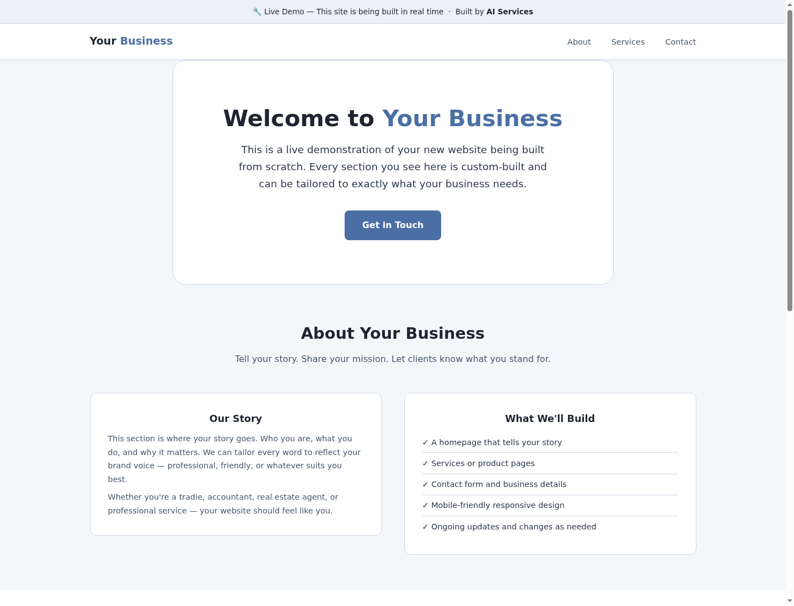

AI workflow prototypes
Document extraction, inbox triage, structured data capture, internal assistants and repetitive admin flows.
I design and build useful web tools, AI workflows and automation prototypes that solve real admin problems.
Not a strategy deck. I scope the problem, build the smallest useful version, test it, and leave you with something you can actually use.
AI is only useful when it connects to the messy parts of a business: documents, bookings, emails, spreadsheets, websites and follow-up.
Document extraction, inbox triage, structured data capture, internal assistants and repetitive admin flows.
Small applications for bookings, queues, client intake, reporting, scheduling and operational control panels.
Public websites, landing pages and demos that explain what you do without sounding like generic software copy.
Practical help connecting tools, testing processes and improving systems that already exist in your business.
Examples of the kind of practical systems I build: lightweight, specific and designed around real-world use.
A browser-based tool for managing players, levels, queues, court assignments, timers and match flow for a busy social tennis session.
Open demoA client-side proof of concept that reads invoice files, extracts text and turns line items into downloadable spreadsheet data.
Open demoA practical assistant concept for solo and small trade businesses. It focuses on missed enquiries, simple lead capture, job details and follow-up without forcing a heavy CRM process.
Open demo
A simple demonstration page for showing how a small business website can be shaped, edited and improved quickly.
Open demoThe same pattern applies across projects: understand the workflow, build a focused version, test it with real use and improve what matters.
Read approachFeedback from social tennis organisers testing the court allocation app in real sessions.
"First impression is damn good, definitely keen for a deeper dive."
I had wondered how easy a web app could be developed for us, so thanks for taking the plunge on this.
"Looks impressive."
Small businesses do not need a bloated delivery process. They need a clear problem, a working build and honest testing.
We map the workflow and decide what should be automated, simplified or left alone.
I build a lean prototype or page that demonstrates the core value quickly.
We test with actual documents, tasks, messages or users instead of polished mock examples.
The next round focuses on the useful parts: reliability, speed, copy, layout and handover.
I am not selling a generic AI package. The portfolio matters because it shows the kind of work I do: small, specific systems that make sense in context.
Send through the problem, the current process and what a good outcome would look like. I will tell you whether a small build makes sense.